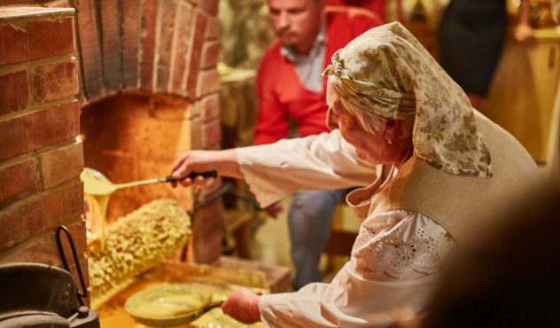
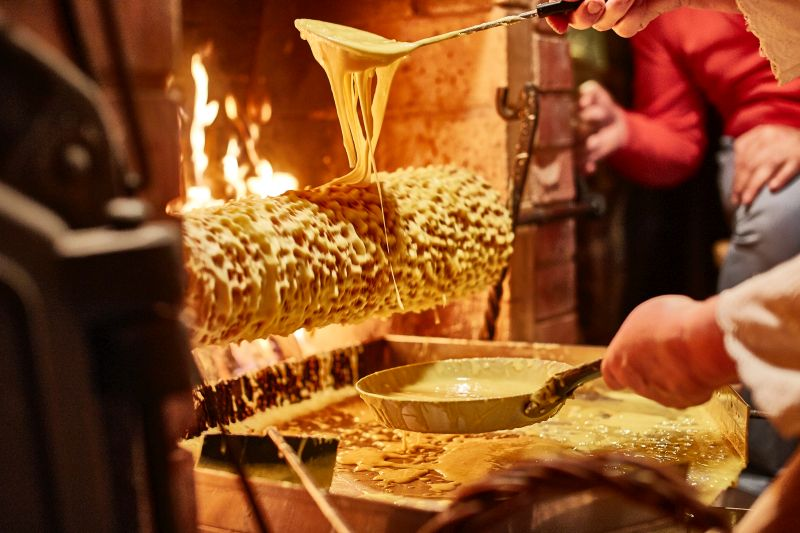
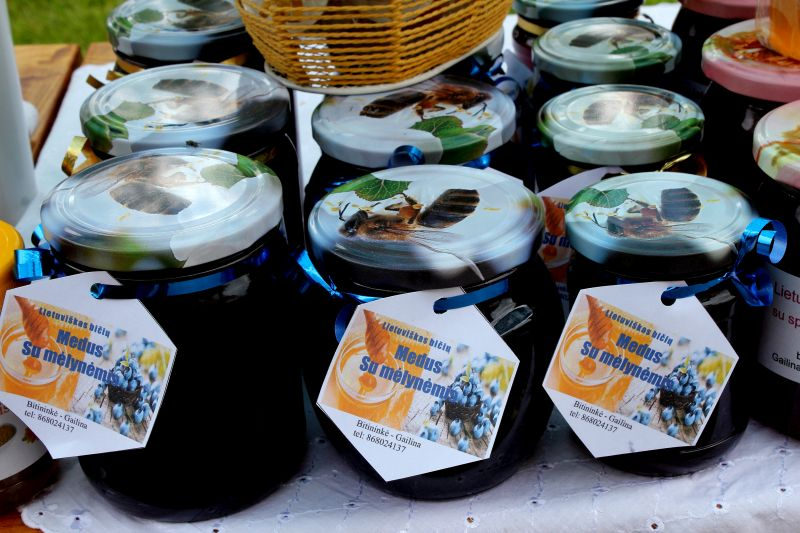
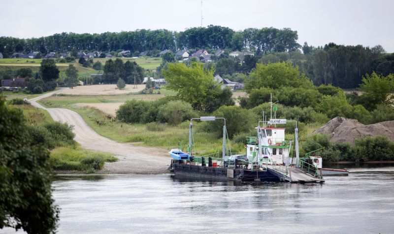
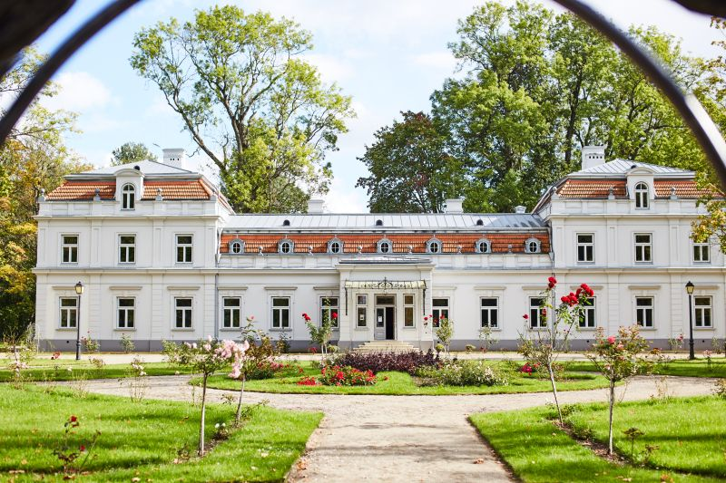
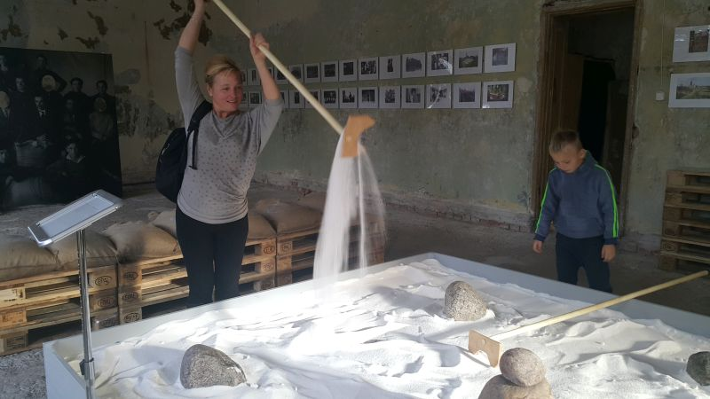

Kelionės yra tiesiausias ir paprasčiausias būdas pajusti didelę laimę. Nesvarbu, ar skrisite niolika valandų lėktuvu į tolimiausią pasaulio kraštą, ar automobiliu išnaršysite Lietuvą, o gal išeisite į žygį pėsčiomis, – laimė lyg koks vitaminas kaupsis ir didės. Keliaudami daugiau judame, daugiau juokiamės, daugiau pamatome, daugiau kalbame ir, žinoma, – daugiau ragaujame!

Lekėčių bendruomenės Moterų klubo kulinarinio paveldo namai. Nė kiek tie suvalkiečiai, kitaip – sūduviai, neskūpūs, dar ir labai svetingi. Buvome, ragavome, rekomenduojame. Net mėgstamiausia lietuvių vasaros sriuba šaltibarščiai čia kitokie – su ugnyje skrudinta silke! Arba ragaukite raugintų kopūstų sriubos su spanguolių uogiene ir svarainiais, o tada – košelienos (zanavykai taip vadina šaltieną). Po pietų – gilių kavos.
Šakočio kepimas tinka didesnei kompanijai, nes sukti senovinį volą ir per kiaurasamtį tešlą varvinti teks ilgai. Šakotį kepti padeda Romutė – tešla pagal jos motulės receptą, o pati Romutė prie krosnies jau ilgiau kaip septynis dešimtmečius sukasi. Žandai kais, tad būkite pasiruošę. Mums šakotis skaniausias dar karštas…

Mėlynių festivalis Lekėčiuose liepos 15 d. Vienintelis toks mėlynėms skirtas renginys Lietuvoje. Viskas iš mėlynių ir apie jas. Visą dieną praleisite gryname ore, veiklos netrūks nei tėvams, nei vaikams.

Lekėčių pažintinis takas rangosi pušynuose. Šie miškai turtingi uogų, grybų ir gyvūnų – yra netgi labai retų baltųjų kiškių: žiemą jie baltutėliai, o vasarą – pilkesni. Gal pamatysite? Tako ilgis 4 kilometrai, o užėję į Gamtos ir miškininkystės informacinį centrą sužinosite, kurioje pusėje Didysis šaltinis, jo vanduo itin švarus.
Vienintelis Nemuno keltas laukia netoli šaltinio. Keltu žmonės iš Vilkijos keliasi į Pavilkijį, o už kelių kilometrų jau Lekėčiai. Išbandykite!

TRUPUTĮ TOLIAU…
Zyplių dvaras Šakių rajone – vienas jauniausių dvarų Lietuvoje, turėjęs labai daug šeimininkų – kunigaikščių, grafų ir dvarininkų. Iš čia augančių vynuogių pagaminto vyno paragausite dvare užsisakę edukacinę programą. Pasivaikščiosite smagiai, čia daugybė keistų skulptūrų, Heraklio kėdės, arklidės, paveikslų ir įdomių dalykų pilnas Zanavykų muziejus. Ir naujiena – neseniai pradėjęs veikti restoranas „Kuchmistrai“ su XIX a. įkvėptais patiekalais. Ragaukite ruginės duonos, „ŠaltYbarščių“ ir „Baumkucheno šaltkošės“ – ledų su šakočio trupiniais, šokoladu ir juodųjų serbentų ir rožių uogiene. Įdomus desertas – pastarnokų vafliai su šviežiais agurkais ir svarainių medumi. Virtuvės šefė juos kepė ant krosnies užkeltoje senovinėje vaflių keptuvėje!

Saldžiamiestis – saldi ekskursija į seniausią Lietuvoje Marijampolės cukraus fabriką. Pamatysite cukraus pasaulio užkulisius, stebėsite, kaip cukrinis runkelis virsta cukrumi. Po fabriką pavedžios gidas Giedrius Šlekys. Nepamirškite nusifotografuoti prie paminklo runkeliui!
